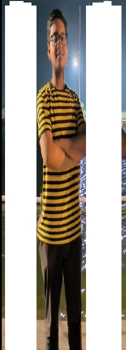

Welcome !!!
We are a team of passionate students who came together to create a platform that would make a difference in
people's lives. Our goal is to build a community that connects individuals from all over the campus and provides
them with the best food.
Our website is designed to be a one-stop-shop for all your needs, whether you're looking for Chinese food or
authentic Indian food, everything is available.
We are committed to providing our users with the best possible experience, and we're constantly working to improve
our platform. We value feedback from our users, and we encourage you to reach out to us with any suggestions or
concerns.
Thank you for choosing our website, and we look forward to being a part of your journey to
success!
Regards
Founders of
THE FIVE
-
PIYUSH GUPTA
First-year undergrad at NIT KKR in the Computer Engineering Department.
Visit Linkedin
For more details, visit the LinkedIn profile. -

SWASTIK BHOWMICK
First-year undergrad at NIT KKR in the Computer Engineering Department.
Visit Linkedin
For more details, visit the LinkedIn profile. -
SHOBITA BHARDWAJ
First-year undergrad at NIT KKR in the Computer Engineering Department.
Visit Linkedin
For more details, visit the LinkedIn profile. -
MEENA
First-year undergrad at NIT KKR in the Computer Engineering Department.
Visit Linkedin
For more details, visit the LinkedIn profile. -
PRACHI YADAV
First-year undergrad at NIT KKR in the Computer Engineering Department.
Visit Linkedin
For more details, visit the LinkedIn profile.